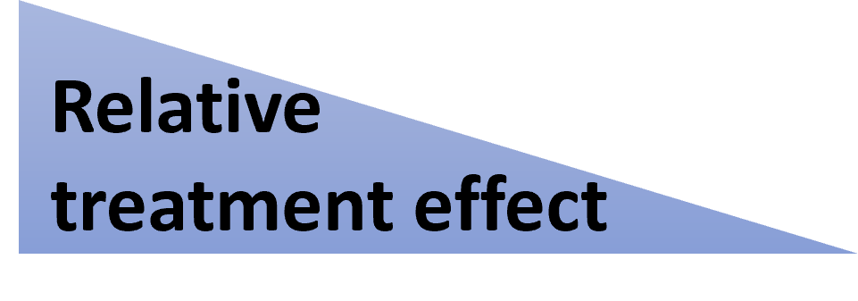
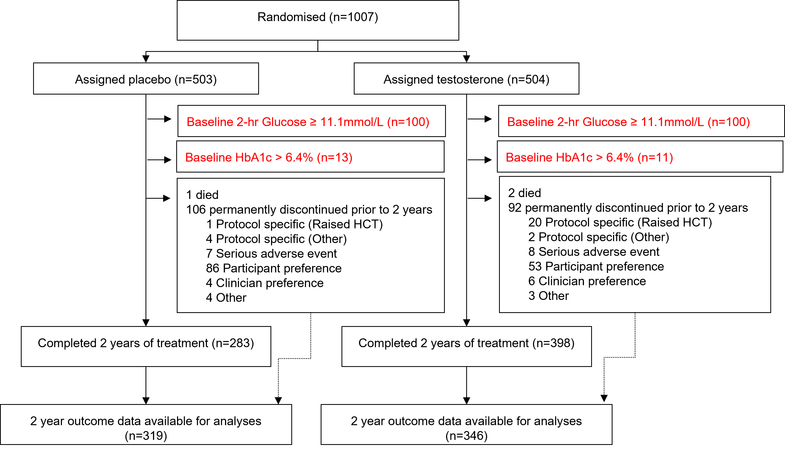
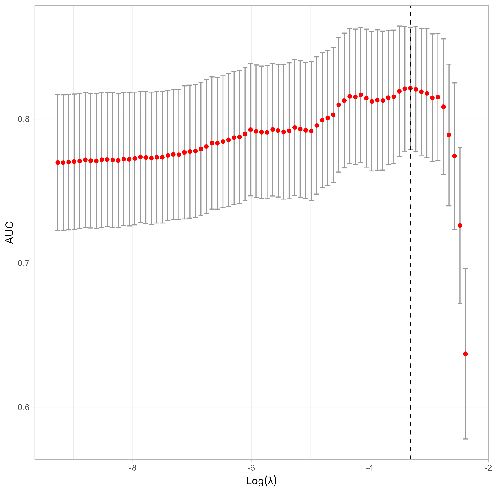
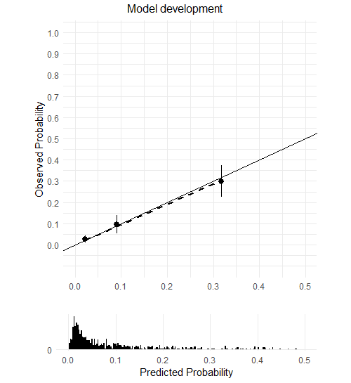
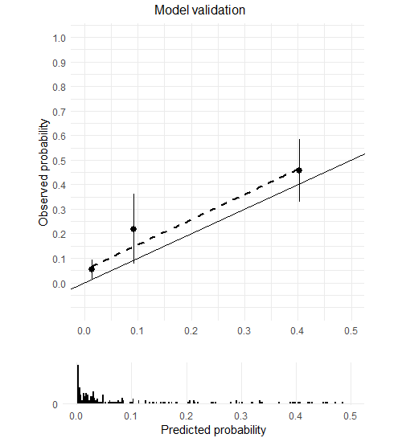

The University of Sydney
Explaining
Prediction

Footers for comments, often with links to further resources. Doesn’t show up when printing the slides.
Primary outcome: Diabetes at two years, as measured by 2-hour glucose by OGTT \(\ge\) 11.1mmol/L

Wittert G, Bracken K, Robledo KP, et al. Testosterone treatment to prevent or revert type 2 diabetes in men enrolled in a lifestyle programme (T4DM): A randomised, double-blind, placebo-controlled, 2-year, phase 3b trial. The Lancet Diabetes & Endocrinology 2021;9:32–45. https://doi.org/10.1016/S2213-8587(20)30367-3


